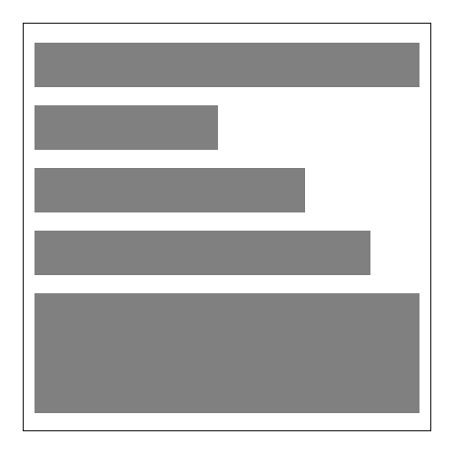
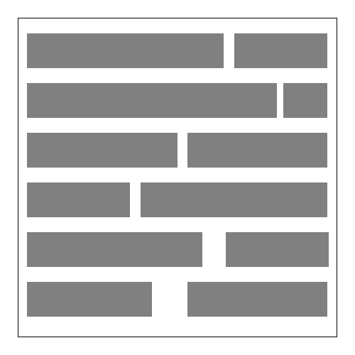

第3週：文字與段落
HTML + CSS 網站架構
前情提要
文字段落與標題 課堂練習：前出師表 自己撰寫後出師表
區塊元素vs行內元素
區塊元素示意圖

行內元素示意圖

區塊與行內元素規則
區塊元素可以包住行內元素
例如：<p>這是區塊元素可以包住<span>行內元素</span></p> ✔️
行內元素不能包住區塊元素
例如：<span>這是行內元素不能包住<p>區塊元素</p></span> ❌
文字段落區塊大集合
<h1><h1>標題一</h1></h1>
<h2><h2>標題二</h2></h2>
<h3><h3>標題三</h3></h3>
<h4><h4>標題四</h4></h4>
<h5><h5>標題五</h5></h5>
<h6><h6>標題六</h6></h6>
<p><p>這是段落</p>
<blockquote cite="https://www.example.com">
<blockquote>這是長引用
</blockquote>
<div><div>容器，無語意。</div>
清單區塊大集合
ul 無排序清單
<ul>
<li>清單內容</li>
<li>清單內容</li>
</ul>
ol 有排序清單
<ol>
<li>清單內容</li>
<li>清單內容</li>
</ol>
清單巢狀結構
<ul>
<li>清單內容</li>
<li>清單內容</li>
<li>
<ul>
<li>清單內容</li>
<li>清單內容</li>
</ul>
</li>
</ul>
文字段落行內大集合
<span>跟<div>類似，是一種行內的標籤，無語意</span>
<strong><strong>這是粗體強調</strong></strong>
<em><em>這是斜體，歐文中的另一種強調用法</em></em>
<ins><ins>這是加底線</ins></ins>
<del><del>這是刪除線</del></del>
<code><code>這是程式碼</code></code>
<q><q>短引用</q></q>
上標：X<sup>2</sup>，下標：H<sub>2</sub>O
<mark> 這可以拿來作類似螢光筆的效果 </mark>
<abbr title="Hyper Text Markup Language">HTML</abbr> 可以做到說明縮寫
<ruby>漢<rt>ㄏㄢˋ</rt>字<rt>ㄗˋ</rt></ruby> 注音
<cite> 這是引用 </cite>
Hyper 連結
<a href="https://ics.wp.shu.edu.tw">這是一個連結</a>
<a href="https://4icsshu.github.io/20250428/image.jpg">開啟image.jpg</a>
屬性說明
target="_blank"另開新頁面<a href="https://4icsshu.github.io/20250428/image.jpg" target="_blank">以另開新頁面開啟image.jpg</a>
download直接下載（某些檔案不適用）<a href="https://4icsshu.github.io/20250428/image.jpg" download>點了直接下載(image.jpg)</a>
download="abc.jpg"直接下載，檔名為後面設定的內容<a href="https://4icsshu.github.io/20250428/image.jpg" download="abc.jpg">下載成abc.jpg</a>
特殊連結
<a href="tel:02-22368225">22358225</a>- 手機點了就可以撥出<a href="sms:02-22368225">22358225</a>- 手機點了就可以傳訊息<a href="mailto:seraphwu@gmail.com">seraphwu@gmail.com</a>- 手機點了就可以寫 e-mail
圖片
placehold.co 可以快速產生圖片，在網站建構初期可以使用
<img src="https://placehold.co/600x400">
連結圖
<a href="http://ics.wp.shu.edu.tw"><img src="https://placehold.co/600x400"></a>
路徑的寫法
絕對路徑
https://fonts.googleapis.com/earlyaccess/notosansjapanese.css
注意：//fonts.googleapis.com/... 表示是避免 http / https 的問題
相對路徑
/從根目錄.同層目錄../上一層
注意： / 開頭的連結無法在本機開啟
VS Code Extensions
Live Server - 開啟資料夾，按下 Go Live
CSS 三種寫法
外連（head 內）
<link rel="stylesheet" type="text/css" href="styles.css">
改一次全站改，可加上 media 限定媒介/設備
<link rel="stylesheet" type="text/css" href="print.css" media="print">
這個僅套用在列印時
內嵌（head 內）
<style>
p {font-size:1rem;}
span {font-size:10px;color:red;}
</style>
要修改每個 HTML 都得改
行內（元素後）
<p style="color:red;">這段文字都會是紅色</p>
要修改每一行都得改
網站的 wireframe
畫出大致網站佈局
先拿後面的來作介紹 https://bootstrap.hexschool.com/docs/4.2/examples/